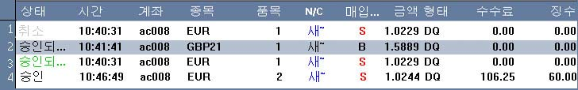

실행
주문들 리스트
주문 패널은 모든 미확인된
주문들과 온라인 세션 중에 사용자에 의해 취소된 주문들을 포함하고 있다.

-
현황/상황 - 패널에 포함되어 있는 각각의 지시사항은 다음 상황 중 하나를 갖고
있다:
미확인 - 지시사항이 거래실로부터의 확인을 보류 중일 때, 주문은 실행 주문 리스트 상에
녹색의
미확인 상태로 나타난다.
확인
- 거래 데스크가 주문을 실행하게끔 수락하면, 주문은 확인 상태로 나타나고, 확인된 주문은 사용자가
시스템을 나갈 때까지 실행 주문 리스트 상에 머물 것이다.
취소 - 지시사항이 어떤 이유로 거절되면, 지시사항은 회색의 취소 상태로 돌아 간다. 패널은
모든
취소된 지시사항이 의도적으로 제거되거나 사용자가 나갈 때까지 온라인 세션 동안 갖고
있다.
-
시간 - 주문 상황에 따라, 시간은 주문 제출이나 확인에 대한 날짜와 시간을
표시한다.
-
계좌 - 거래 계좌 코드
-
항목 - 지시사항에 대한 거래 항목의 아이디 코드
-
Lot - 지시사항의 거래량
-
N/C - 새 주문에 대해선 N, 페쇄 주문에 대해선 C
-
매입/매도 - 구매 지시사항에 대해선 B, 판매 지시사항에 대해선 S
-
가격 - 주문 상황에 따라, 가격은 주문에 대한 정해진 가격이나 계약가를 표시한다.
-
유형 - 지시사항 유형
-
수수료 - 확인된 주문에 대한 수수료나 다른 중간 요금
-
징수액 (Levy) - 확인된 주문에 대한 무역 계좌에 부과된 징수액이나 다른 수수료
사용자가 계약에 관한 정보를 더 필요로 하면, 다음의 작동을 행하면
된다:
사용자가 원하는 주문에 마우스로 두 번 클릭하면, 다음과
같은 정보를 포함하는 거래 지시사항 대화창이 나타난다:
-
1. 참고번호 - 주문에 대한 독특한 아이디
-
2. 항목 - 거래계기에 대한 상징표시
-
3. 가격 - 확인될 때 주문의 목표가
-
4. 구매/판매 - 계약의 구매/판매 특성.
계약이 판매시, 정보 대화창 대부분이 빨간 색으로, 구매시 파란 색으로 나타날 것이다.
-
5. 단위
- 계약의 단위량
-
6. 계좌 - 계약 계좌
-
7. 유형 - 지시사항의 주문 유형
-
8. 옵션 - Limit 주문에 대한 better나 stop 옵션
-
9. 제출시간 - 주문이 제출된 시간
-
10 만료시간 - 미확인으로 남아 있을시 주문이 만료되는
시간
-
11 자산 과 수수료 - 확인된 주문시 주문에
대한 수수료와 부과금 그리고 청산 주문에 대한 모든 무역관련 이윤/손실
-
12 오픈 포지션 - 지시사항이 정산목적일시 실행날짜, 상응하는 공개계약에 대한 양과 가격
-
13 유의사항들 - 지시사항의 다양한 상황을 나타내는 시스템 메시지
-
14 취소 - Limit/Stop/MOC/MOO 주문시 지시사항 취소를
위해서나 미확인인 채 있기 위한 버튼. 주문 취소
참조
-
15 해제 - 취소된
지시사항시 실행 주문 리스트로부터 지시사항을 없앨 버튼
-
14 퇴장 - 지시사항 대화창을 닫고 싶으면 버튼을
클릭하면 된다.